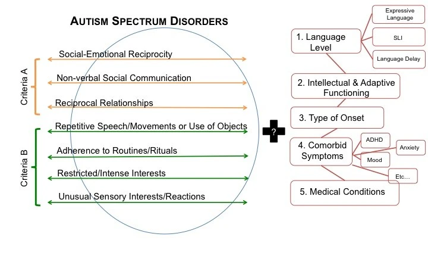
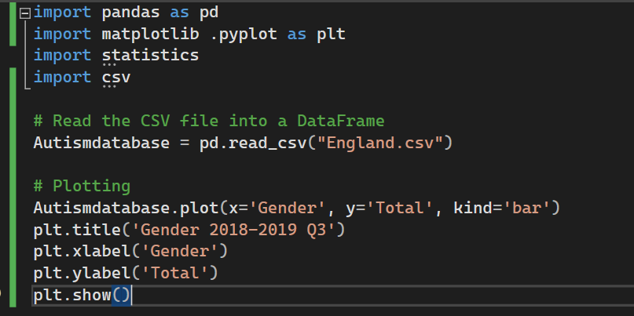
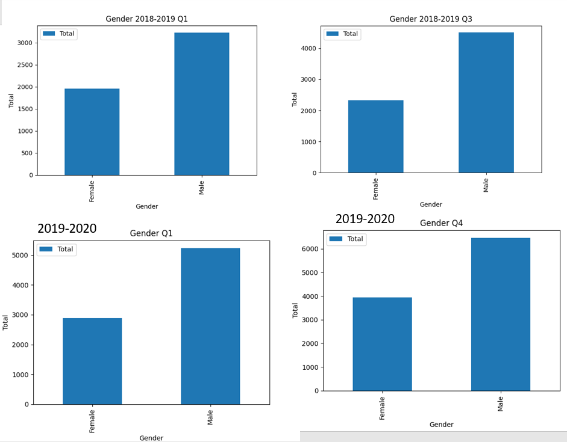
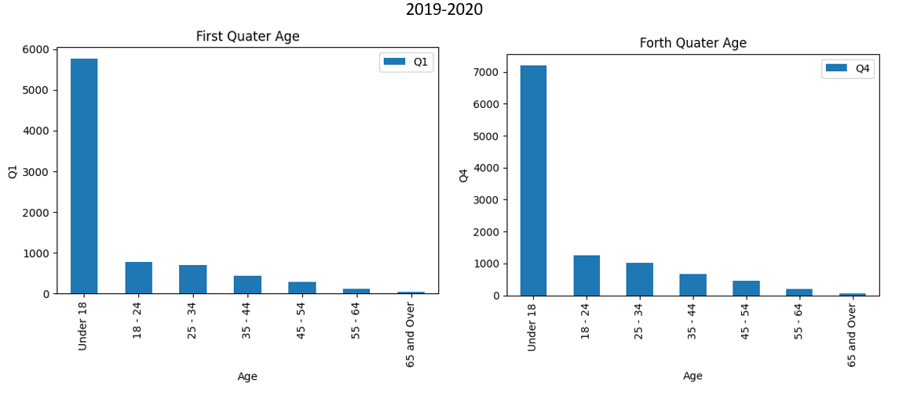

Autism stereotypes: Is there really gender bias?
Abstract
This essay looks into the impacts of the stereotypes of Autism Spectrum Disorder (ASD). There are clear disparities in age and gender for those seeking diagnosis’. Though the criteria for autism has evolved to be able to include a larger range of behaviours. The essay looks into positive portrayals in media, looking depth about Dr. Spencer Reid. This essay recommends that there be more research into female autism and to destigmatise adult diagnoses’.
Introduction
Autism Spectrum Disorder, referred to as ASD, is a developmental disability caused by differences in the brain [1]. It shows challenges in social interaction, communication and repetitive behaviours. It is stereotyped as being found in male children. This has made a diagnosis gap between genders, there are more males diagnosed than females.
This essay seeks to look into whether there is a correlation between the stereotype (Males under 18) and those seeking diagnosis. Using data from the NHS over the period of April 2018 to March 2020. The NHS has data on autism wait times over this period.
Literature review
figure 1
The criteria for ASD has changed over the years. The current diagnosis requires at least two of the following behaviours: Repetitive speech or movement, strict social routines, intense focused interests and they also have unusual reactions to stimuli. Those on the spectrum struggle with communication and find it harder with subtlety. They require direct communication, being clear with intentions with they words rather than their actions. Figure (1) comes from DSM-5 and autism spectrum disorders [2].
Autism has in the past been mostly diagnosed in young boys and in the past was thought to be only in childhood. Through medical research autism has been proven to be for life and found in more than just AMAB individuals. More people are now getting their diagnosis’ or are getting their children testing. Males are three times more likely to get diagnosed than Females is stated in Autism, thy name is man [3].
There is also a high likelihood that it is comorbid with other disabilities, like ADHD, dyslexia and anxiety[4]. This could also be in some cases because of misdiagnosis, as AFAB people are more likely to be stereotyped that way. This results in the bias becoming worse and those individuals trying to get diagnosis’ later in life but being unable to. Though diagnosis’ becoming harder to obtain due to doctors asking parental figures about how the person seeking diagnosis was as a child. The parent could have a bias that results in the individual getting no diagnosis.
There is estimated to be 1 in 100 in the UK who are autistic as of 2010[5], this is likely due to ASD being made more aware of by pieces of media. There examples in shows like Bad Batch, where one of the main characters (Tech) is autistic coded [6] according to fans. There is also Spencer Reid from Criminal Minds, who’s autistic traits are portrayed consistently throughout the 15 year run of the show [7]. Spencer is also a favourite amongst fans of Criminal Minds, though he is often infantilised within the show and treated like a child, with nick names such as “Pretty Boy” and “Boy Genius”[8]. Spencer has become a comforting character for fans despite how much trauma he has been through.Though both of these examples are male, there appears to be a lack of female representation in media [9].
Hypothosis.
There are many stereo types related to ASD and those result in people not seeking diagnosis. There it is often more male children (Under 18) that are put onto the waiting lists in the first place. This means that others outside the demographic who may require it will not seek a diagnosis as they believe it’s too late.
Method
NHS waiting lists from [10] 2018-2019 and [11] 2019-2020, here are a collection of bar graphs made using python code in visual studio. The bar graphs are made using the code snippet found in figure(2). This one is specific to the gender bar graphs though most were made similarly. Using Pandas, multiple bar charts were created showing the data collected by the NHS.
figure 2
Results
In figure (3) there is the total of people on the waiting list in England over the time frame monitored (1/04/2019-31/03/2020). There seems to be a quieter period at the start of a year that would allow them to lower the total, as there are less people wanting to get the diagnosis. There is a spike at the start of the school year, likely because of children going to school and the ASD criteria showing up as they socialise. Q3 is from the 1st of October to the 31st of December.
figure 3

In Figure(4) data shows that male individuals are often placed onto the waiting list then female individuals. This is because historically, it was thought that only men could be autistic. This has been disproven with years of study. Yet from 2018 to 2020 the proportions of those diagnosed remained the same with only 38% of the total being female and 62% being male. So now diagnoses are being sought by 2/5 female and 3/5 male.
figure 4
In figure(5) it shows that adults are less likely to seek a diagnosis this may be due to multiple factors. There is doctors often asking parents about someone’s childhood, which means there may be a bias if the parents have undiagnosed ASD. It is also often spotted by teachers, which is why it is diagnosed early. Though this means that it gets harder for those who are older to get diagnosed, as it is so often found in childhood.
figure 5
Conclusion
In conclusion, 3/5 of those who sought a diagnosis and placed on a waiting list in the past were male. An overwhelming amount were under 18 and were likely placed on the waiting list at the start of the school year. There is currently a lot more male representation of autism in media than female, though it can be fairly accurate with some inaccuracies.
Recommendations
There should be increased research into female autism, as the lack of it has resulted in ASD being shown as a male disorder. This would allow for increased awareness and more training to determine ASD in AFAB people. There should also be more awareness spread to insure that ASD isn’t shown as a children’s diagnosis, as this stigmatises adults from seeking diagnosis. Media may be able to help in spreading awareness of ASD, as long as it is portrayed accurately.
Bibliography
[1] ‘CDC: ASD Signs and symptoms’. [Online]. Available:https://www.cdc.gov/ncbddd/autism/signs.html#:~:text=Autism%20spectrum%20disorder%20(ASD)%20is,%2C%20moving%2C%20or%20paying%20attention.
[2] C. Lord, M. Huerta, and R. Grzadzinski, ‘DSM-5 and autism spectrum disorders (ASDs): an opportunity for identifying ASD subtypes’, May 2013, [Online]. Available: https://molecularautism.biomedcentral.com/articles/10.1186/2040-2392-4-12?report=reader
[3] R. Brickhill, G. Atherton, A. Piovesan, and L. Cross, ‘Autism, thy name is man: Exploring implicit and explicit gender bias in autism perceptions’, Aug. 2023, Accessed: Mar. 03, 2024. [Online]. Available: https://journals.plos.org/plosone/article?id=10.1371/journal.pone.0284013&utm_source=nationaltribune&utm_medium=nationaltribune&utm_campaign=news#sec001
[4] NHS, ‘What is Autism?’, What is autism? [Online]. Available: https://www.nhs.uk/conditions/autism/what-is-autism/
[5] G. Eyal, The Autism Matrix. Polity, 2010.
[6] ‘Slick Was Right’, Tumblr. Accessed: Mar. 08, 2024. [Online]. Available: https://eelfuneral.tumblr.com/post/702740686743732224/tech-speaks-very-differently-from-other-clones-he
[7] ‘Reid’s Autistic Traits’, Tumblr. Accessed: Mar. 08, 2024. [Online]. Available: https://friendraichu.tumblr.com/post/138902383100/reids-autistic-traits
[8] ‘Spencer Reid’, Criminal Minds Wiki. Accessed: Mar. 08, 2024. [Online]. Available: https://criminalminds.fandom.com/wiki/Spencer_Reid
[9] R. Kataja, ‘Where Are The Autistic Women in the Media?’, Harvard Political Review. Accessed: Mar. 08, 2024. [Online]. Available: https://harvardpolitics.com/autistic-female-representation/
[10] NHS England, ‘Autism Statistics’. Nov. 14, 2019. [Online]. Available:igital.nhs.uk/data-and-information/publications/statistical/autism-statistics/autism-statistics
[11] NHS England, ‘Autism Waiting Time Statistics - Quarter 1 to quarter 4 2019-20 and Quarter 1 (April to June) 2020-21’. Sep. 10, 2020. [Online]. Available: https://digital.nhs.uk/data-and-information/publications/statistical/autism-statistics/q1-april-to-june-2020-21